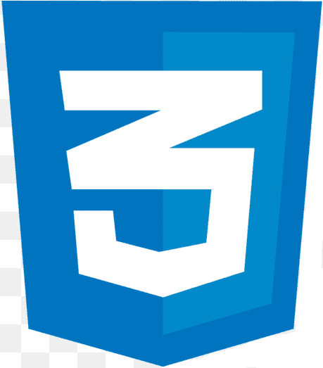

Clone da Tela do App Spotify
Este projeto, desenvolvido com HTML e  CSS, demonstra minhas habilidades em desenvolvimento front-end através da recriação da interface do Spotify.
- Barra Lateral: Navegação fixa em telas maiores e ajustável em dispositivos móveis.
- Conteúdo Principal: Busca estilizada e botão de login com efeitos visuais.
- Design Responsivo: Layout ajustável para diferentes tamanhos de tela com animações suaves.
Este projeto destaca minha capacidade de criar interfaces modernas, interativas e funcionais inspiradas na experiência visual do Spotify.